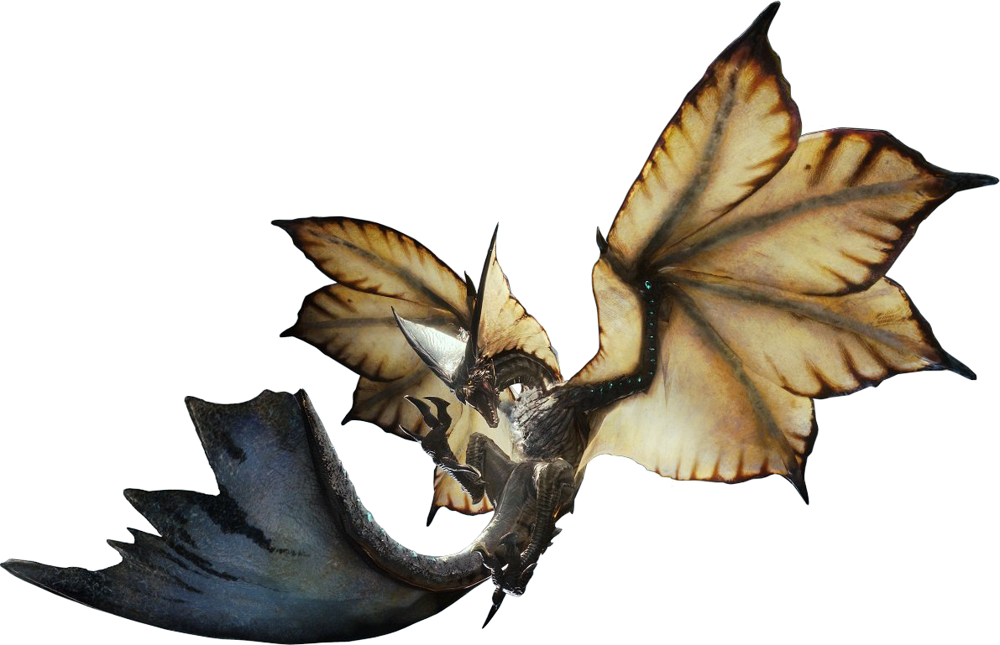

Visita el sitio oficial de Nintendo
El Nergigante posee un cuerpo robusto cubierto de escamas negras y numerosas púas. Su apariencia es similar a la de un demonio o una gárgola, y posee grandes cuernos retorcidos sobre su cabeza. Sus poderosas patas delanteras están cubiertas de escamas afiladas y asestan fuertes golpes, mientras que sus grandes alas similares a las de un murciélago le permiten volar con agilidad.
El Xeno'jiiva es un gigantesco dragón anciano cuadrúpedo cubierto de escamas de color azul claro, emanando un brillo azulado por sus patas, cola, cabeza y alas, y una luz roja en el pecho. Sus alas son gigantescas y similares a las de una mariposa, mientras que sus patas alargadas terminan en garras como manos. Su cabeza es extraña, con dos grandes cuernos que poseen círculos que brillan de color naranja, pareciendo ojos. Su cola alargada termina en forma de pequeñas aletas azules, al igual que en sus alas, patas y cabeza.

El Legiana es un wyvern de gran tamaño con un cuerpo ligero. Sus escamas son de color amarillo claro por abajo y azul por encima, con marcas negras en forma de cruz en las alas. Las alas del Legiana son muy grandes, como una mariposa, y le otorgan una gran capacidad de vuelo. Posee una especie de antenas en su cabeza que puede extender como velas, su cola alargada también posee dos grandes aletas que puede ocultar cuando se mueve por el suelo. Sus patas traseras están armadas con garras afiladas como espadas.

“No tenemos mucho tiempo....
pronto habrá otra batalla....
si sobrevivimos.”
| Juego | Consola | Año | Ventas |
| Monster Hunter: World | Xbox One | 26 de enero de 2018 | 16.8 millones de unidades. |
| Playstation 4 | |||
| Resident Evil 7 | Xbox One | 26 de enero de 2017 | 8.5 millones de unidades. |
| Resident Evil 2 | Playstation 4 | 21 de enero de 1998 | 7.8 millones de unidades. |